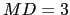

Next: Automatic Features Weight Estimation Up: Use of the Estimated Previous: Use of the Estimated Contents
For any given set of  channels at frame
channels at frame  (
) the beamforming system determines a single vector
with dimension obtained from the best TDOA values
between each microphone and the reference. The dimension of the
TDOA vector will change depending on the number of microphones
available. This does not indicate a priory that TDOA vectors with
lower dimension will be able to discriminate worse between
speakers, as it depends not only on the number of microphones but
also on the acoustic properties of the room (influencing how
accurate the TDOA values are), the microphones topology and the
location of the speakers.
(
) the beamforming system determines a single vector
with dimension obtained from the best TDOA values
between each microphone and the reference. The dimension of the
TDOA vector will change depending on the number of microphones
available. This does not indicate a priory that TDOA vectors with
lower dimension will be able to discriminate worse between
speakers, as it depends not only on the number of microphones but
also on the acoustic properties of the room (influencing how
accurate the TDOA values are), the microphones topology and the
location of the speakers.
For any particular frame, the vector will contain a set of TDOA values that identify the location of the main acoustic source towards where the acoustic beamforming is steering. To exemplify this, figure 5.10 shows the histograms and X-Y plot of the first two dimensions of the TDOA vectors extracted for all speech frames in the show ICSI_20000807-1000 containing six speakers (which is the actual number of participants in that meeting). The histograms show the existence of around 6 speakers, being some of them closer together than others. In the X-Y plot the higher density places indicate higher probability of speakers. The points that fall far from any of the speakers are due to silence regions not eliminated by the post-processing step in the beamforming, or by acoustic events other than speakers (pen drops, door slams, etc). There are also some vectors falling along one of the speaker axes indicating that a speaker is most probably active during that frame instant but the different dimensions do not agree. This can be due to overlap regions where each microphone points at a different speaker or errors in the TDOA approximation. This problem is common when computing TDOA values and is one of the issues addressed by the double-Viterbi post-processing algorithm. The remaining TDOA vectors not detected by the post-process tend to cause errors in the diarization algorithm by causing models to fit such data as an independent speaker.
The use of delays for speaker diarization using the presented diarization system was initiated by J.M. Pardo and presented in Pardo et al. (2006a). Later, the same proposed in Pardo et al. (2006b) the combination of TDOA values and acoustics in order to improve results even more. Also at ICSI some work by Gallardo-Antolin et al. (2006) shows other features fusion alternatives other than the TDOa values.
In order to use these delays vectors to add extra information in the speaker diarization module they are treated as a feature vector and modeled by a GMM. As used in Lathoud, McCowan and Odobez (2004), a single Gaussian is used to model the clusters initially created in the diarization system. In figure 5.11 it indicates the way that features computed from the acoustic signal and the TDOA values are fused.
Upon starting the diarization two feature streams are available for processing, the acoustic stream (which is composed of 19 MFCC features, computed every 10ms) and the TDOA stream, computed in the beamforming module. In theory the same TDOA values that are used for the beamforming process can be reused in this module, but in practice, in order to obtain synchrony between acoustics and TDOA values, they are recomputed every 10ms. Use of the same TDOA values was also tested by repeating the same values several times (25 times for 250ms scroll) with slightly worse (but acceptable) results, showing its feasibility in case of computational constraints.
In order to process the signal using both feature streams the system maintains two different/independent HMM speaker model sets and keeps the same speaker clustering, which gets defined using both streams. The speaker models use the same structure as in the standard system (an ergodic HMM) and share the number of speakers, defining a model pair for each speaker cluster, but can be represented using a different complexity, depending on the optimum way that the data in each stream should be modeled.
The first step in the system is to initialize the K initial speaker clusters. This entails splitting the input data among these K clusters. This is currently done in the same way as in the standard system, using solely the acoustic data stream. Once an initial clustering is defined, the initial models are created both for the acoustics and the TDOA values and the system enters the segmentation/training step. Both speaker models are used in the Viterbi decoding to determine the optimum path among the different speaker clusters by considering the joint log-likelihood for any given frame as
where , is the acoustic model and data, , is the delay model and data, and weight the effect of each stream in the decoding, given that . In this formulation it is considered each stream to be statistically independent from each other, which is a plausible consideration given that acoustic and TDOA information convey very different information. If more feature streams are available, this formulation can be expanded with each feature likelihood being weighted by a different . When running the Viterbi decoding a minimum duration for a speaker segment is set to  seconds (optimized for the development data) for both models in order to avoid constant changes in the clustering. Once a new speaker clustering is defined, the models are retrained independently.
The second step where the feature streams fusion takes place is in the clustering step where the closest cluster pair is selected and the clusters and models are merged (or the processing finishes if the stopping criterion decides so). As explained in 3.1 the cluster pair comparison metric of choice is a variant of the BIC metric where the penalty term is eliminated by constraining the complexity of the different models being compared. In this particular case the formulation for the BIC contemplating the fusion between both streams can be defined directly from equation 5.20 as
where are two clusters we want to compute the distance for, and are the same weights as in eq. 5.20. This can also be directly expanded to use more than 2 streams.
If frame or segment purification are to be applied, these are done so only using the acoustic frames. This is so in the case of frame purification because the TDOA models react in a different way to the non-speech data than the acoustic models.
The same stopping criterion as in the regular system is used. While the system does not determine to stop the clustering process, the closest cluster pair is selected and merged, together with the models belonging to such cluster. In the case of the TDOA models the merging is done by overlapping both existing models and retraining the overall model using all the data from both clusters. In the case of the acoustic models it is either done in the same way as just explained or it is modified according to the determined new complexity for the resulting model.
Whenever the system determines to stop clustering, a final Viterbi decoding is performed using again both frame streams, with a smaller minimum duration, as explained in the meetings system in section 3.3.